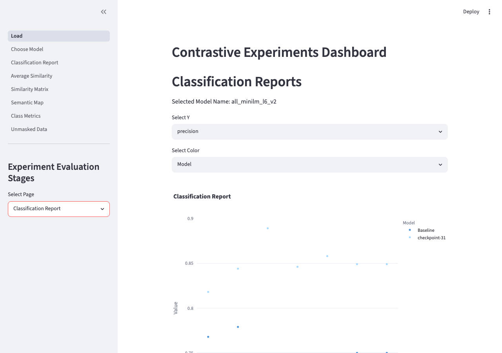

Analytical Method
Contrastive Fine-tuning for Classification
Reshaping the embedding space with contrastive learning to improve k-NN classification accuracy on population-scale annotated data
Developed at CASM Technology · Senior Data Scientist
Context
From Sample to Population
Earlier projects had shown that modifying the sentence transformer embedding space could improve how topic clusters aligned with analytical objectives. That work — guided topic modelling — operated on the clustering side of the pipeline: reshape the space so that UMAP and HDBSCAN produce better-aligned topics.
This experiment arose from a different problem. A project required scaling analysis from a representative sample to the full population of documents, which meant moving from thematic labelling on a subset to classifying the entire corpus. The chosen approach was k-NN classification using a small set of annotated exemplars — practical because it requires no additional supervised training and generalises well when exemplars are representative.
The problem was that the general-purpose embedding space had semantic entanglement: categories the project needed to distinguish were sitting too close together in vector space. The hypothesis was that contrastive fine-tuning — the same technique used in guided topic modelling, but now applied with classification accuracy as the target metric — could untangle this and produce a measurable improvement.
Input
Annotated Data, Not Raw Text
Unlike the topic modelling pipeline, which begins with unannotated text, this experiment takes already-annotated data as its input — documents that had been labelled through a prior topic modelling and annotation process. This makes it a standalone classification evaluation experiment, entirely decoupled from the clustering pipeline.
Three data splits are required:
- Train — used for contrastive pair generation and fine-tuning
- Validation — held-out set for classification evaluation
- Exemplars — a small labelled set used as reference points by the k-NN classifier
The exemplar set is kept small by design — the value of the approach is that meaningful classification can be achieved with few labelled examples when the embedding space is well-structured for the task.
Approach
Contrastive Pair Strategies
The fine-tuning process trains the sentence transformer on pairs of documents with a supervision signal: same-class pairs should be close in the embedding space, different-class pairs should be far apart. Two pair strategies were tested:
Contrastive — positive pairs (same class, label=1) and negative pairs (different class, label=0), trained with ContrastiveLoss. Provides an explicit push/pull signal: same class closer, different class further apart.
Positive only — same-class pairs only, trained with cosine similarity loss. Pulls same-class embeddings together without an explicit repulsion signal for different classes.
Each strategy was tested with two sampling methods: exhaustive (all pairwise combinations, practical only for small datasets) and stratified (fixed number of pairs sampled per class, balanced across the label set). Each training configuration is hashed and stored as a separate experiment directory, so multiple variants can be run and compared without overwriting prior results.
Evaluation
k-NN as the Probe
The k-NN classifier is not the deliverable — it is the measurement instrument. Its role is to provide a consistent, training-free probe of embedding space quality: because k-NN relies entirely on distances between embeddings, any improvement in classification performance is attributable to the embedding space, not to classifier-specific training.
The same classifier is applied to the baseline model and to each saved checkpoint of the fine-tuned model. Comparing performance across checkpoints shows how classification accuracy changes as the embedding space is progressively reshaped — and whether there is a point at which further fine-tuning begins to degrade performance by over-compressing the space.
Outputs per checkpoint: per-class precision, recall, and F1; intra-class cosine similarity distributions; cross-class similarity matrices; and UMAP projections of the embedding space, which give a visual indicator of how cluster separation changes across training steps.
Pipeline
The experiment is structured as five sequential stages, each implemented as an independently runnable workflow class. Stages can be run individually — useful when iterating on a single step without rerunning the full experiment — or end-to-end via a single script.
| Stage | Workflow | What it does |
|---|---|---|
| 1 | TrainWorkflow |
Generates contrastive pairs from the labelled training set and fine-tunes the sentence transformer. Each config is hashed; results stored under the hash directory so multiple configs can be run without collision. |
| 2 | EmbeddingExtractionWorkflow |
Encodes train, validation, and exemplar splits using both the baseline model and every saved checkpoint from Stage 1. |
| 3 | ValidationWorkflow |
Produces per-class intra-class cosine similarity scores, cross-class similarity matrices, and UMAP projections for each model and split. |
| 4 | ClassificationWorkflow |
Runs the k-NN classifier on the validation set for the baseline and each checkpoint. Outputs per-class precision, recall, F1, prediction confidence scores, and annotated documents with predicted labels. |
| 5 | ResultsWorkflow |
Aggregates all per-checkpoint outputs into a single consolidated results directory. This is what the dashboard reads. |
Running the pipeline — two modes:
- Notebooks (00–05) — each stage is a separate Jupyter notebook, runnable locally or on Colab. Configs are loaded by name from the
configs/directory — no inline parameter editing required. Suited to iterative runs where individual stages need re-examination. - Script —
python scripts/run_pipeline.pyruns all five stages end-to-end from a single command. Useful for clean reproducible runs once a config is finalised.
Dashboard
A Streamlit dashboard (streamlit run dashboard/Load.py) reads from the consolidated results and provides seven pages for comparing the baseline model against any fine-tuned checkpoint. The model and config are selected once on the first page and carried through all subsequent views.
| Page | What it shows |
|---|---|
| Choose Model | Combined metrics table across all experiments and configs. Sort by any metric column; scatter plot of any metric coloured by config. Starting point for identifying which checkpoint to investigate. |
| Classification Report | Per-class precision, recall, and F1 for the selected model vs baseline, plotted on the same axes. A second filtered view lets you isolate a specific config. The primary view for answering whether fine-tuning improved classification. |
| Average Similarity | Intra-class cosine similarity per class label — how tightly packed each class is in the embedding space. An increase post-fine-tuning indicates the space has become more coherent for that class. |
| Similarity Matrix | Cross-class cosine similarity heatmap. Select model, config, and split. Shows which classes are semantically entangled — high off-diagonal values indicate pairs the classifier is likely to confuse. |
| Semantic Map | UMAP projection of the embedding space for a selected model, config, and split. Generated on demand. Colour-coded by class label — the visual indicator of whether contrastive fine-tuning has produced cleaner cluster separation. |
| Class Metrics | Aggregated per-class view combining classification F1, intra-class similarity, mean UMAP cohesion score, and mean prediction confidence — all on one chart coloured by metric. Useful for spotting classes that are structurally hard regardless of the fine-tuning approach. |
| Unmasked Data | The full annotated dataset with predicted labels attached. Supports group-by slicing (labelled by, document type, source) and generates a classification report for each slice. Used for diagnosing where errors cluster — by annotator, data source, or document type. |

Classification Report page — baseline vs fine-tuned model precision per class
Relationship to Guided Topic Modelling
Both methods use contrastive learning to reshape a sentence transformer embedding space, but they address different problems at different points in the analytical workflow. Guided topic modelling operates upstream — it reshapes the embedding space before clustering, so that UMAP and HDBSCAN produce topics that align more closely with a predefined analytical framework. That work sits inside the topic modelling library and was first applied when unsupervised clustering was producing topics that did not cleanly separate analytically distinct categories.
This experiment operates downstream — it takes already-annotated data and asks whether contrastive fine-tuning can improve the accuracy of a k-NN classifier applied to the full document population. There is no clustering here. The shared technique is contrastive learning; the goal, the input, and the evaluation are entirely different.
Tech Stack
Links
Library & Pipeline
Dashboard
Related Methods